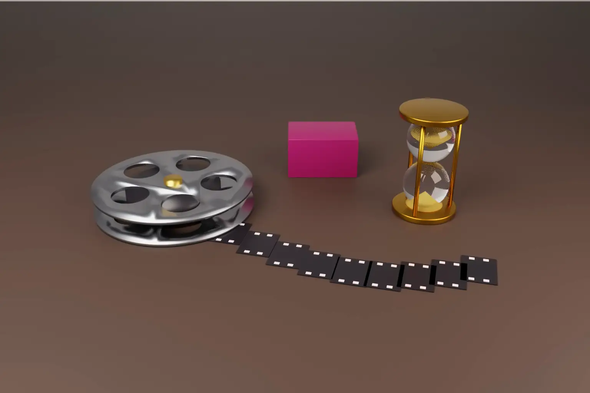

How fast must a platform remove a pirated film in India once a court has protected it? In the Ramayana case, within three hours of the producer's notice. On 6 November 2026 the Bombay High Court added that outer limit to a John Doe injunction granted four days earlier. Internet service providers and platforms must also confirm in writing that they can act in real time and name a nodal officer.
The case is Godpower Media Private Limited v John Doe(s) and Ors, Interim Application (L) No. 37234 of 2026 in Commercial IP Suit (L) No. 37230 of 2026. Both orders are interim. The suit returns to the regular bench on 16 December 2026.
- On 2 November 2026 Justice Madhav J. Jamdar granted a John Doe injunction protecting the film before its release on 5 November.
- Internet service providers must block notified websites and URLs. Platforms must take down or de index notified content. Both may object with reasons.
- On 6 November 2026 Justice Ashish S. Chavan, sitting as vacation judge, directed 32 intermediaries to act on each notice immediately and in any event within three hours.
- The intermediaries must confirm in writing that they have systems and people in place, and name a nodal officer for real time action.
- The three hour limit matches the window that the IT Rules now give intermediaries to act on court orders and government intimations.
The facts
Godpower Media holds copyright in the film Namit Malhotra's Ramayana and its underlying works. The plaint describes a budget of about Rs. 2,000 crore for the first of two films. The suit was filed partly for infringement that had already occurred and partly as a quia timet action against expected piracy at release.
The pleaded history explains the urgency. Portions of the first trailer were recorded at an invitees only launch event on 18 July 2026 and shared on social media. Segments of the second trailer leaked before its release on 15 October 2026. The producer's anti piracy agency detected not fewer than 4,500 infringing links. Dormant pages already claimed to offer the film free online.
The suit named 35 defendants. Defendant No. 1 stands for unidentified operators of rogue websites, mirrors, torrent and cyberlocker services, messaging channels, cable and DTH operators, and people who record the film in cinemas. Defendants 2 to 28 are internet and telecom service providers. Defendants 29 to 33 are social media and messaging platforms. The Ministry of Electronics and Information Technology and the Department of Telecommunications were joined so that they could direct all service providers to comply.
The 2 November order
Justice Jamdar found, prima facie, a real and well founded apprehension of piracy. The film was likely to be recorded, uploaded and streamed once released (paragraph 16). He noted that various High Courts had passed similar orders on such apprehension (paragraph 17). The later order of 6 November records that relief was granted on prayers (a), (c)(i), (c)(ii), (d)(i), (d)(ii) and (e).
- Prayer (a) restrains Defendant No. 1 from making the film or any part of it available through any medium, including mirror, redirect, proxy and alphanumeric variants of websites.
- Prayer (c) requires the internet service providers to block listed URLs forthwith, and further websites and URLs notified by the producer in writing.
- Prayer (d) requires the platforms to take down, disable or de index listed content forthwith, and further content notified by the producer.
- Prayer (e) requires MeitY and the Department of Telecommunications to direct all internet and telecom service providers to block notified websites and URLs within 36 hours of the producer's written notice.
Notified intermediaries keep the right to tell the producer, with reasons, why they object to a block or removal. The court also directed the producer to tell the internet service providers and platforms of their obligations, so that they could act immediately (paragraph 21).
The 6 November order
The film was released on 5 November. The producer had sent a notice and a reminder on 4 November. Most intermediaries had still not confirmed that they would act on takedown requests immediately. Only Vodafone India (Defendant No. 7) gave a substantive response. Its counsel stated that it had complied and would continue to comply.
The producer's argument was simple. The first hours after release are when piracy spreads, and a delay of a few hours puts content beyond the reach of any takedown. A three hour limit only gives a measurable meaning to the word "immediately" in the earlier order. Justice Chavan accepted that the producer's concern "appears to be genuine" and that the further relief was in aid of the earlier order (paragraph 4).
The operative order directs Defendants 2 to 33 to do three things. They must act on each takedown or blocking notice immediately, and in any event within three hours of receipt. They must confirm in writing that they will comply on an immediate, real time basis with systems and persons in place. They must give the name, email and telephone number of a nodal officer. The directions are subject to further orders of the regular bench.
How the order fits the 2026 IT Rules
The Information Technology (Intermediary Guidelines and Digital Media Ethics Code) Amendment Rules, 2026 were notified as G.S.R. 120(E) on 10 February 2026. They took effect on 20 February 2026. They shortened the time in rule 3(1)(d) for removing unlawful information from thirty six hours to three hours. That clock runs from actual knowledge, which arises through a court order or a reasoned intimation from an authorised government officer.
The Ramayana order applies the same three hour figure to notices issued by the rights holder under a court's injunction. In practice, platforms that already run a three hour process for government and court orders can extend it to these notices. The order does not decide whether the IT Rules themselves apply to a rights holder's notice. It rests on the court's own power to frame interim relief.
What the orders do not decide
- They are interim. The service providers and platforms were directed to file replies by 30 November 2026.
- They make no finding on any particular URL. The right to object with reasons remains.
- They do not decide whether any platform lost its safe harbour under section 79 of the Information Technology Act, 2000.
- They do not set a rule for every film. The three hour limit was granted on evidence of leaks and non response in this case.
- They do not change the 36 hour window in prayer (e) for blocking through the government's directions.
How the US, the EU and the UK compare
United States. Under 17 U.S.C. § 512(c)(1)(C), a host keeps its safe harbour if it "responds expeditiously" to a proper notice. The statute sets no fixed number of hours. US law allows only narrow blocking orders against foreign sites under section 512(j), and courts rarely grant them. Our note on live sports piracy and dynamic injunctions explains the gap.
European Union. Article 16(6) of the Digital Services Act requires hosting providers to process notices in a timely, diligent, non arbitrary and objective manner. Commission Recommendation (EU) 2023/1018 asks providers to decide notices on live sports events during the live transmission itself. It also endorses dynamic injunctions with safeguards. Neither sets a fixed number of hours, and the Recommendation is not binding.
United Kingdom. Section 97A of the Copyright, Designs and Patents Act 1988 lets the High Court order service providers to block infringing services. Live blocking orders for football have run since 2017. Timing is set by the terms of each order, not by a statutory deadline.
| Jurisdiction | Time to act on a notice | Source |
|---|---|---|
| India (Ramayana order) | Immediately, and within three hours of the rights holder's notice | Bombay High Court, 6 November 2026 |
| India (IT Rules) | Three hours from a court order or government intimation | Rule 3(1)(d), as amended from 20 February 2026 |
| United States | Expeditiously. No fixed hours | 17 U.S.C. § 512(c)(1)(C) |
| European Union | Timely. For live sports, during the transmission | DSA Art. 16(6), Recommendation 2023/1018 |
| United Kingdom | As set by each blocking order | Section 97A CDPA |
Practical steps
- Producers should file before release, with evidence of leaks, dormant links and the release date. Courts act on a well founded apprehension.
- Producers should ask for an outer time limit, written confirmation and nodal officer details in the first application. Waiting until after release costs time.
- Producers should join the internet service providers, the main platforms, MeitY and the Department of Telecommunications, and keep timestamped records of every notice.
- Platforms and service providers should name a nodal officer available outside business hours and log the time each notice is received and acted on.
- Platforms that think a notice is wrong should use the right to object with written reasons, rather than simply not acting.
We advise on copyright registration, licensing and enforcement in India. See our copyright enforcement services and our overview of types of intellectual property protection.
Frequently asked questions
How quickly must platforms remove pirated films in India?
Under the IT Rules, an intermediary must act within three hours of a court order or government intimation. In the Ramayana case, the Bombay High Court also required action within three hours of the producer's own notice under its injunction.
What is a John Doe order against film piracy?
It is an injunction against unknown infringers, usually granted before a film's release. It lets the rights holder notify new websites and URLs to service providers and platforms for blocking or takedown, without returning to court each time.
Can a platform refuse a takedown notice under such an order?
The Ramayana order lets notified intermediaries tell the producer, with reasons, why they object to a block or removal. They should do so promptly rather than ignore the notice.
Official source
- Godpower Media v John Doe(s), Bombay High Court, order of 6 November 2026 (Ashish S. Chavan J)
- Godpower Media v John Does, Bombay High Court, order of 2 November 2026 (Madhav J. Jamdar J)
- Commission Recommendation (EU) 2023/1018 on combating online piracy of sports and other live events
- 17 U.S.C. § 512 (limitations on liability relating to material online)